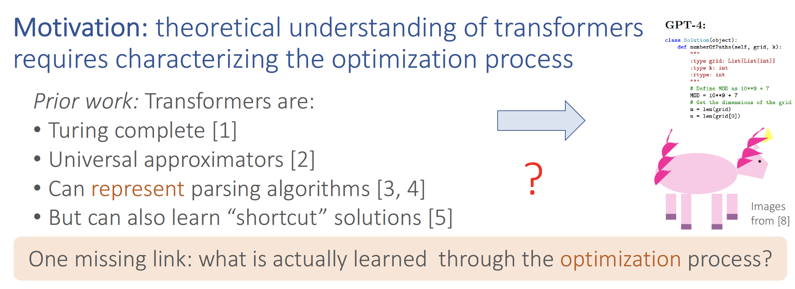
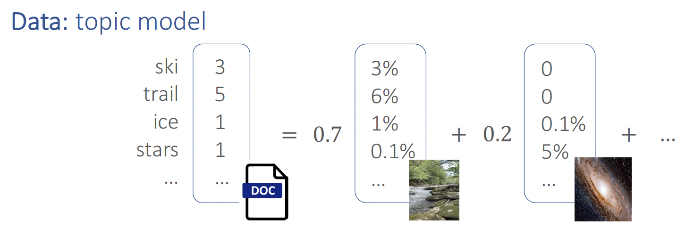
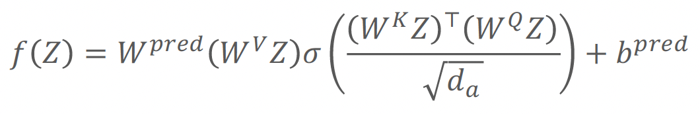
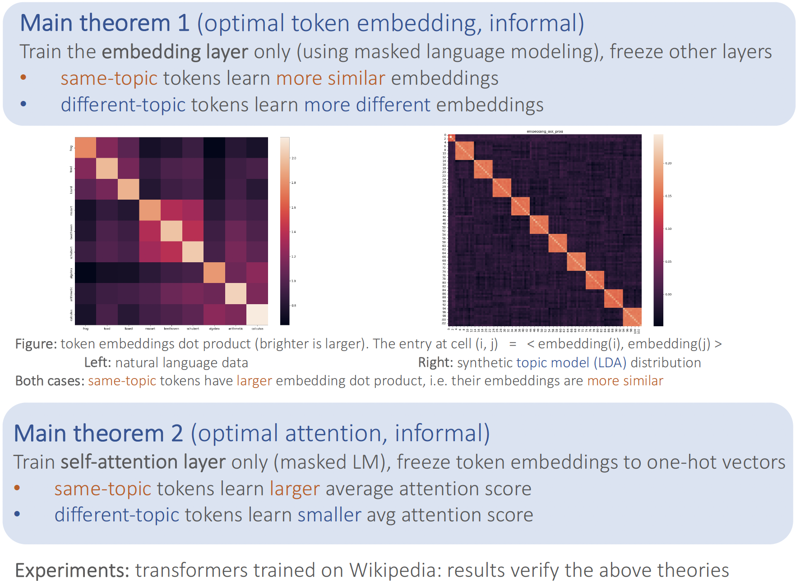
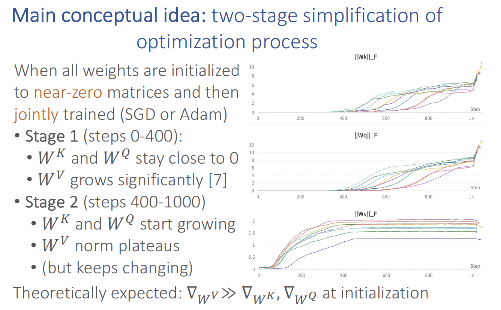
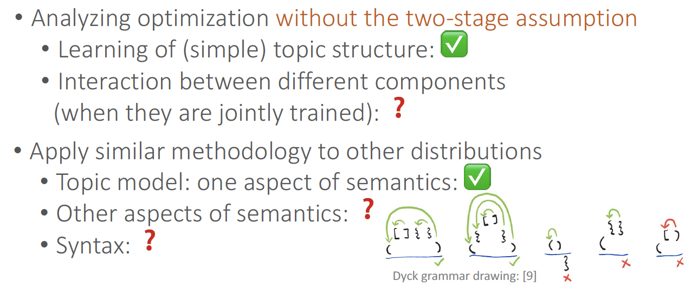

We develop mathematical understanding of the training process of transformers through the lens of learning topic structures.
We prove that the embedding layer or attention layer alone can learn to encode topic structure.
In particular, our main conceptual idea is that the optimization process of self-attention can be approximately broken down into two stages (when all model parameters are initialized to small matrices near 0).
This idea is theoretically reasonable, empirically verifiable, and makes the analysis tractable.
Experiments on synthetic and real-world data verify our theory.
Motivation
While the empirical successes of transformers across many domains are indisputable, accurate understanding of the learning mechanics is still largely lacking.
Their capabilities have been probed on benchmarks which include a variety of structured and reasoning tasks—but mathematical understanding is lagging substantially behind.
Recent lines of work have begun studying representational aspects of this question:
that is, the size/depth/complexity of attention-based networks to perform certain tasks.
However, there is no guarantee the learning dynamics will converge to the constructions proposed.
Therefore, theoretical understanding of transformers requires characterizing the optimization process.

Methodology
We use synthetic data as a sandbox for a scientific approach to understanding deep learning models.
Real data are messy and complex (containing semantics, syntax, etc).
To study them in more formal manner,
we focus on one aspect at a time, by studying some simple synthetic setting
The benefits include controlling variables, which helps single out each factor to study.
The long-term research agenda is to progressively study more realistic data distributions.
Data distribution
We study semantic structure, as understood through the lens of co-occurrences of words, and
their topical structure. Precisely, if we fit topics to a real-life corpus like Wikipedia using a Latent Dirichlet
Allocation (LDA) model [6], we find a pretrained BERT model produces token embeddings
that are more similar (in terms of inner product or cosine similarity) if they belong to the same topic, and
more different if they belong to different topics.
Inspired by these observations, we study LDA-generated data as a sandbox to understand—both through
experiments on such synthetic data, and theoretical results—the process by which the embeddings and
attention learn the topical structure.
We find that the above observations from Wikipedia data are even
more pronounced on synthetic LDA data.

Model architecture
We study a simplified one-layer transformer.

Main theoretical results
We analyze the optimization process of transformers trained on data involving "semantic structure", e.g. topic modeling.
Through theoretical analysis and experiments, we show that between same-topic words, the embeddings should be more similar, and the average pairwise attention should be larger.

Main conceptual idea
In particular, we observe that with carefully chosen initialization and learning rate, the optimization process of self-attention can be approximately broken down into two stages:
in stage 1, only the value matrix changes significantly; in stage 2, the key and query matrices catch up much later, even though all components are jointly optimized through standard SGD or Adam.
This observation might be of independent interest, for future works on understanding the learning dynamics of transformers as well.

Future directions
We initiated the study of understanding training dynamics of transformers in the presence of semantic
structure captured by a topic model. Interesting directions of future work includes extending the analysis
to data distributions that captures “syntactic” structure, e.g. through simple sandboxes like PCFGs. When
both the model and the data distributions are complex, it remains a daunting challenge to “disentangle”
how the many different aspects of the data (e.g. semantic and syntactic elements) are learned through the
different parts of model architecture (e.g. attention, positional encodings, and embeddings).

Acknowledgements
We thank Bingbin Liu, Yusha Liu, and Tanya Marwah for proofreading and providing constructive comments,
Yewen Fan for helpful suggestions on empirically obtaining the two-stage optimization process, and Emmy
Liu and Graham Neubig for insightful discussions on the connections with empirical observations.
Andrej Risteski and Yuchen Li acknowledge support by NSF awards IIS-2211907 and CCF-2238523.
Andrej Risteski also acknowledges support by Amazon Research Award “Causal + Deep Out-of-Distribution
Learning”.
References
Jorge Pérez et al, 2021, Attention is Turing Complete
Chulhee Yun et al, 2020, Are Transformers universal approximators of sequence-to-sequence functions?
Shunyu Yao et al, 2021, Self-Attention Networks Can Process Bounded Hierarchical Languages
Haoyu Zhao et al, 2023, Do Transformers Parse while Predicting the Masked Word?
Bingbin Liu et al, 2023, Transformers learn shortcuts to automata
David Blei, et al, 2003, Latent Dirichlet Allocation (LDA)
Charlie Snell, et al, 2021. Approximating how single head attention learns